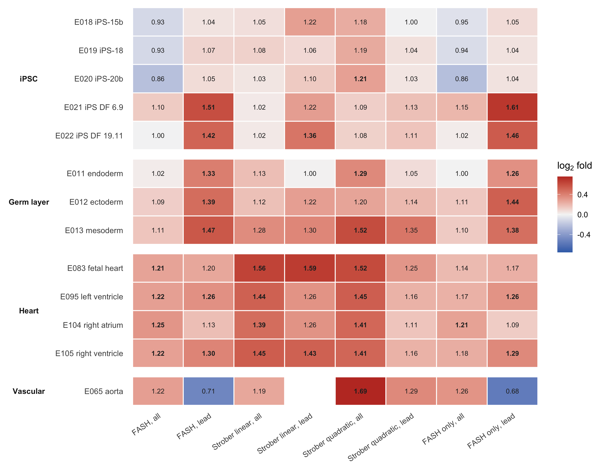
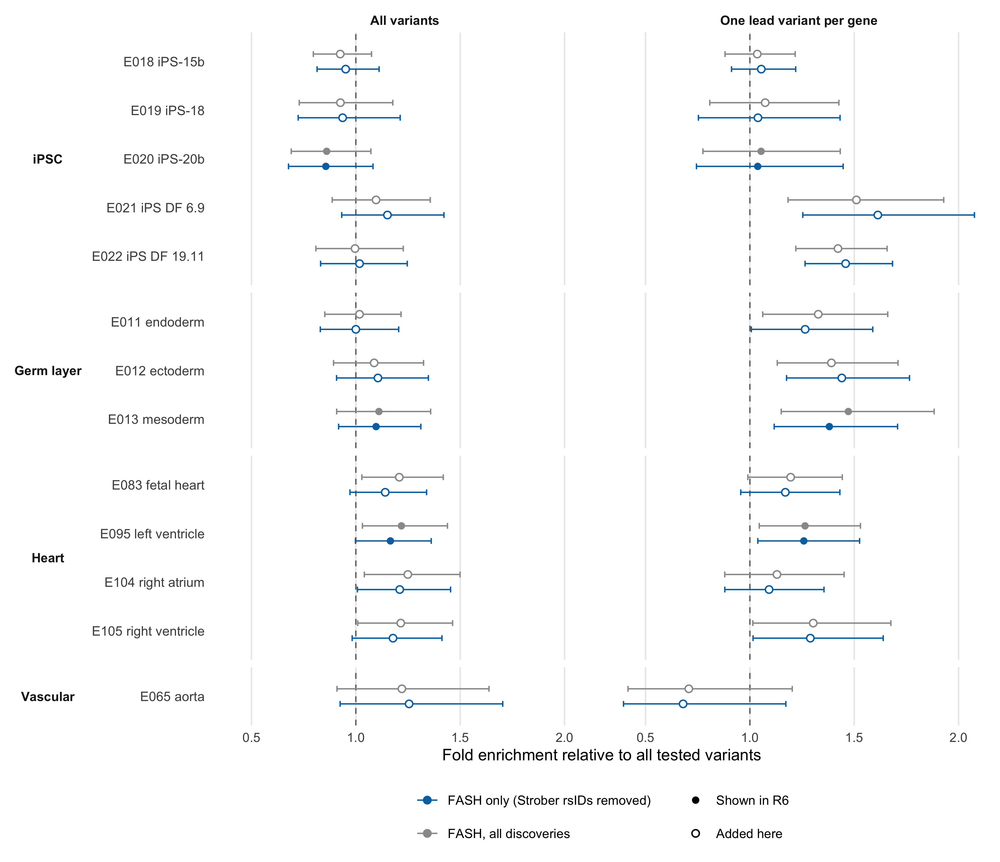
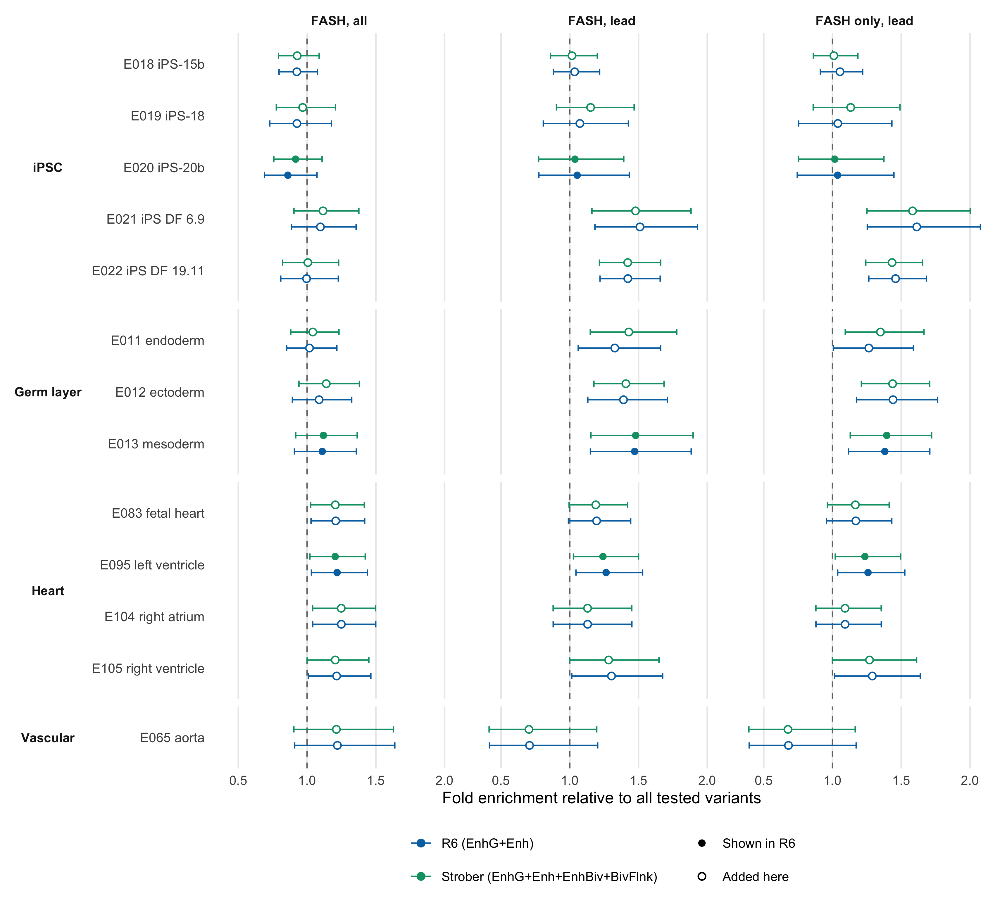
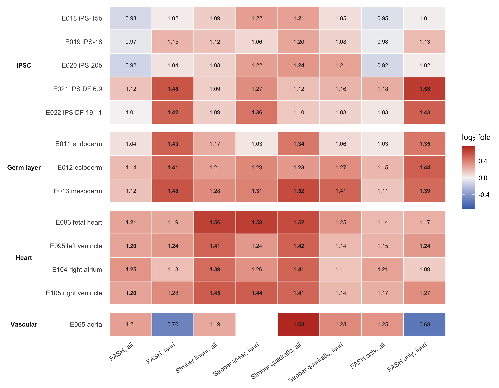

Internal analysis: a broader Roadmap enhancer panel
Ziang Zhang
2026-08-25
Last updated: 2026-08-26
Checks: 7 0
Knit directory: coderepo-local/
This reproducible R Markdown analysis was created with workflowr (version 1.7.2). The Checks tab describes the reproducibility checks that were applied when the results were created. The Past versions tab lists the development history.
Great! Since the R Markdown file has been committed to the Git repository, you know the exact version of the code that produced these results.
Great job! The global environment was empty. Objects defined in the global environment can affect the analysis in your R Markdown file in unknown ways. For reproduciblity it’s best to always run the code in an empty environment.
The command set.seed(20251109) was run prior to running
the code in the R Markdown file. Setting a seed ensures that any results
that rely on randomness, e.g. subsampling or permutations, are
reproducible.
Great job! Recording the operating system, R version, and package versions is critical for reproducibility.
Nice! There were no cached chunks for this analysis, so you can be confident that you successfully produced the results during this run.
Great job! Using relative paths to the files within your workflowr project makes it easier to run your code on other machines.
Great! You are using Git for version control. Tracking code development and connecting the code version to the results is critical for reproducibility.
The results in this page were generated with repository version cf611a8. See the Past versions tab to see a history of the changes made to the R Markdown and HTML files.
Note that you need to be careful to ensure that all relevant files for
the analysis have been committed to Git prior to generating the results
(you can use wflow_publish or
wflow_git_commit). workflowr only checks the R Markdown
file, but you know if there are other scripts or data files that it
depends on. Below is the status of the Git repository when the results
were generated:
Ignored files:
Ignored: .DS_Store
Ignored: .Rhistory
Ignored: .Rproj.user/
Ignored: Rplots.pdf
Ignored: analysis/.DS_Store
Ignored: analysis/.Rhistory
Ignored: code/.DS_Store
Ignored: code/.Rhistory
Ignored: code/revision_simulations/.DS_Store
Ignored: data/appendixB/
Ignored: data/dynamic_eQTL_real/
Ignored: data/revision_simulations/
Ignored: data/toy_example/
Ignored: output/dynamic_eQTL_real/
Ignored: output/pdf/
Ignored: output/playwright/
Ignored: output/revision_simulations/
Ignored: scripts/
Untracked files:
Untracked: analysis/revision_internal_fash_knockoff.rmd
Untracked: analysis/revision_internal_fash_temporal_class_enhancer_enrichment.rmd
Untracked: analysis/revision_internal_three_likelihood_comparison.rmd
Untracked: code/03_nonlindyn_lfsr.R
Untracked: code/03_nonlindyn_lfsr.sbatch
Untracked: code/revision_simulations/internal/fash_knockoff/reporting.R
Untracked: code/revision_simulations/internal/fash_knockoff/test_reporting.R
Untracked: code/revision_simulations/internal/fash_temporal_class_enhancer_enrichment/
Untracked: code/revision_simulations/internal/per_unit_expression_correlation/
Untracked: code/revision_simulations/r1_r2_fashr0143/source_snapshots/
Untracked: code/revision_simulations/r3_functional_testing/test_reporting.R
Untracked: code/revision_simulations/r3_r4_fashr0143/21_r3_center_aligned_relative_location_paired_core.R
Untracked: code/revision_simulations/r3_r4_fashr0143/21_r3_center_aligned_relative_location_paired_fashr0143.R
Untracked: code/revision_simulations/r3_r4_fashr0143/21_r3_center_aligned_relative_location_paired_fashr0143.sbatch
Untracked: code/revision_simulations/r3_r4_fashr0143/source_snapshots/r3_center_aligned_relative_location_paired_driver.R
Untracked: code/revision_simulations/r3_r4_fashr0143/source_snapshots/r3_center_aligned_relative_location_paired_simulation_functions.R
Untracked: code/revision_simulations/r3_r4_fashr0143/test_r3_center_aligned_relative_location_paired.R
Untracked: code/revision_simulations/r4_correlated_errors/compute_full_model_residual_correlation.R
Untracked: code/revision_simulations/r4_correlated_errors/compute_pc_residual_expression_correlation.R
Unstaged changes:
Modified: analysis/dynamic_eQTL_real.rmd
Modified: analysis/dynamic_eQTL_real_cl.rmd
Modified: analysis/dynamic_eQTL_real_full.rmd
Modified: analysis/nonlinear_dynamic_eQTL_real.Rmd
Modified: analysis/nonlinear_dynamic_eQTL_real_cl.Rmd
Modified: analysis/nonlinear_dynamic_eQTL_real_full.rmd
Modified: analysis/revision_combined_spiky_genotype_simulation.rmd
Modified: analysis/revision_correlated_error_simulation.rmd
Modified: analysis/revision_genotype_level_simulation.rmd
Deleted: code/02_dyn.R
Modified: code/02_dyn_lfsr.R
Modified: code/02_dyn_lfsr.sbatch
Deleted: code/03_nonlindyn.R
Modified: code/revision_simulations/README.md
Modified: code/revision_simulations/internal/fash_knockoff/plot_lfdr_histograms.R
Modified: code/revision_simulations/internal/fash_knockoff/plot_w_boxplot_by_discovery.R
Modified: code/revision_simulations/r1_r2_fashr0143/reporting_overlay.R
Modified: code/revision_simulations/r4_correlated_errors/reporting.R
Modified: code/revision_simulations/r4_correlated_errors/test_unit_specific_residual_permutation_helpers.R
Modified: code/revision_simulations/r4_correlated_errors/unit_specific_residual_permutation_helpers.R
Note that any generated files, e.g. HTML, png, CSS, etc., are not included in this status report because it is ok for generated content to have uncommitted changes.
These are the previous versions of the repository in which changes were
made to the R Markdown
(analysis/revision_internal_roadmap_enhancer_exploration.rmd)
and HTML
(docs/revision_internal_roadmap_enhancer_exploration.html)
files. If you’ve configured a remote Git repository (see
?wflow_git_remote), click on the hyperlinks in the table
below to view the files as they were in that past version.
| File | Version | Author | Date | Message |
|---|---|---|---|---|
| Rmd | cf611a8 | Ziang Zhang | 2026-08-26 | R6: adopt the EpiCompare 6/7/12 enhancer definition and shorten the page |
| html | cf611a8 | Ziang Zhang | 2026-08-26 | R6: adopt the EpiCompare 6/7/12 enhancer definition and shorten the page |
| Rmd | 55cacb9 | Ziang Zhang | 2026-08-25 | Add internal Roadmap enhancer exploration over 13 epigenomes |
| html | 55cacb9 | Ziang Zhang | 2026-08-25 | Add internal Roadmap enhancer exploration over 13 epigenomes |
Update, 2026-08-26. The decision this page was built
to inform has since been made: R6 now shows all thirteen epigenomes
under the Strober four-state enhancer definition, using one lead variant
per gene only. Everything below describes the earlier three-epigenome R6
page and is kept, unrecomputed, as a dated record of what that decision
rested on. References to “the R6 page”, and the R6 label on
the EnhG + Enh definition, mean that earlier version
throughout.
Question
The reviewer-facing R6 page, revision_enhancer_enrichment.rmd,
reports enhancer enrichment against exactly three Roadmap epigenomes —
E020 (iPSC), E013 (mesoderm), E095 (left ventricle) — chosen to bracket
the differentiation. Those three were picked a priori, but we
have never checked whether each is representative of its biological
neighbours. If E013 and E095 are typical of mesoderm and heart
annotations, the narrow panel is a fair summary. If they are isolated,
the narrow panel is a selection artefact.
This page widens the panel to thirteen epigenomes in four pre-specified groups and reports the same estimator on the same discovery sets. It changes nothing about R6: the R6 page, its code, and its retained output cache are read-only here, and the run script verifies that its own estimates for the three R6 epigenomes reproduce R6’s published numbers to the last digit.
Everything below is descriptive and exploratory. It contains no manuscript claim and no formal comparison between epigenomes or between methods.
What is held fixed
Exactly the R6 analysis, with a wider annotation table:
- Discovery sets. The same eight published sets — FASH, Strober linear, and Strober quadratic/nonlinear, each as all discovered variants and as one lead variant per gene, plus the two FASH-only sets. Nothing is refit.
- FASH-only definition. rsID-level: an rsID counts as FASH-only if it appears in neither Strober analysis, regardless of gene pairing. For the lead column, FASH’s lowest-lfdr variant is chosen per gene first and the exclusion applied afterwards, exactly as on the R6 page.
- Background. All 745,867 autosomal variants tested in this study.
- Estimator. Fold enrichment = overlap rate in the
variant set divided by overlap rate in the background, with the set
excluded from its own comparator; leave-one-autosome-out jackknife 95%
intervals. Both come from
enrichment_api.R::compute_enrichment(..., controls = "background"), unmodified. - No matched controls, and no formal pairwise tests between epigenomes or methods. The nominal p-values the shared API returns are in the output CSVs but are not shown here and carry no multiplicity correction.
The one thing that is genuinely new is the set of annotations, and — in Section 5 only — the ChromHMM state definition behind them.
Section 1: the verified epigenome panel
Every epigenome ID and label below was taken from Roadmap’s own
metadata table, EID_metadata.tab,
rather than from any secondary description.
Roadmap STD_NAME is the official label;
Mnemonic and Roadmap GROUP are Roadmap’s own
grouping fields.
| Group | Epigenome ID | Roadmap STD_NAME | Mnemonic | Roadmap GROUP | Anatomy | In original R6 panel |
|---|---|---|---|---|---|---|
| iPSC | E018 | iPS-15b Cells | IPSC.15b | iPSC | IPSC | |
| iPSC | E019 | iPS-18 Cells | IPSC.18 | iPSC | IPSC | |
| iPSC | E020 | iPS-20b Cells | IPSC.20B | iPSC | IPSC | yes |
| iPSC | E021 | iPS DF 6.9 Cells | IPSC.DF.6.9 | iPSC | IPSC | |
| iPSC | E022 | iPS DF 19.11 Cells | IPSC.DF.19.11 | iPSC | IPSC | |
| Germ layer | E011 | hESC Derived CD184+ Endoderm Cultured Cells | ESDR.CD184.ENDO | ES-deriv | ESC_DERIVED | |
| Germ layer | E012 | hESC Derived CD56+ Ectoderm Cultured Cells | ESDR.CD56.ECTO | ES-deriv | ESC_DERIVED | |
| Germ layer | E013 | hESC Derived CD56+ Mesoderm Cultured Cells | ESDR.CD56.MESO | ES-deriv | ESC_DERIVED | yes |
| Heart | E083 | Fetal Heart | HRT.FET | Heart | HEART | |
| Heart | E095 | Left Ventricle | HRT.VENT.L | Heart | HEART | yes |
| Heart | E104 | Right Atrium | HRT.ATR.R | Heart | HEART | |
| Heart | E105 | Right Ventricle | HRT.VNT.R | Heart | HEART | |
| Vascular | E065 | Aorta | VAS.AOR | Heart | VASCULAR |
Two things in that table are worth noting before any result.
E065 aorta is not a heart annotation. Roadmap files
it under the Heart GROUP, but its ANATOMY is
VASCULAR. It is kept in its own display group throughout,
and drawn on its own row, so that no statement about “heart epigenomes”
is ever silently carried by a vascular tissue.
The panel is Strober’s, not ours. The iPSC set
{E018, E019, E020, E021, E022} and the heart set {E083, E095, E104,
E105, E065} are exactly the two lists hard-coded in
get_cell_line_ids() in Strober et al.’s
perform_tissue_specific_chrom_hmm_enrichment_analysis.py.
The three germ-layer epigenomes are added here as the specificity check,
since cardiomyocytes arise through mesoderm.
The annotation source is the one R6 already uses: the Roadmap
15-state ChromHMM core-marks segmentation,
<EID>_15_coreMarks_mnemonics.bed.gz, from
https://egg2.wustl.edu/roadmap/data/byFileType/chromhmmSegmentations/ChmmModels/coreMarks/jointModel/final/.
The files actually retrieved, with checksums:
| ID | File | Bytes | MD5 |
|---|---|---|---|
| E018 | E018_15_coreMarks_mnemonics.bed.gz | 2,632,050 | 06309f35643075d8f0c3d7df933e9933 |
| E019 | E019_15_coreMarks_mnemonics.bed.gz | 2,784,913 | f2060a2de8466ec0157a92f3865dedf7 |
| E020 | E020_15_coreMarks_mnemonics.bed.gz | 2,873,029 | cedf4fff2f7342ea9cb5bbc9456d1597 |
| E021 | E021_15_coreMarks_mnemonics.bed.gz | 1,724,123 | 5d4558745608e9b6fa42f14d354875ab |
| E022 | E022_15_coreMarks_mnemonics.bed.gz | 2,703,883 | fb7bd7cfc8f824387c889a762f6f8faf |
| E011 | E011_15_coreMarks_mnemonics.bed.gz | 3,296,959 | 195e51c026d1cf9034e937ade00f96a3 |
| E012 | E012_15_coreMarks_mnemonics.bed.gz | 2,079,228 | f9695c51db87c3578a42dcdd28880aa1 |
| E013 | E013_15_coreMarks_mnemonics.bed.gz | 2,483,570 | 640532177fa816c5032f300d45cca3c9 |
| E083 | E083_15_coreMarks_mnemonics.bed.gz | 2,169,548 | cdb7ce95dfb3bb6fadd76fe4ab43c9a5 |
| E095 | E095_15_coreMarks_mnemonics.bed.gz | 2,732,556 | d7c6b90285e032eebbd9c3b6a0b444a6 |
| E104 | E104_15_coreMarks_mnemonics.bed.gz | 2,007,772 | 4342ad9c85e0ce8b5f199b337fc90979 |
| E105 | E105_15_coreMarks_mnemonics.bed.gz | 2,079,527 | 7424f02ebf219f9628e30e0c72c459e8 |
| E065 | E065_15_coreMarks_mnemonics.bed.gz | 2,361,143 | 0a37cdaea927423a33e66a33dee339ad |
The epigenomes are not equally powered. Background enhancer coverage varies roughly fourfold across this panel — from 1.6% of tested variants for the sparsest annotation to 9.3% for the densest. A fold enrichment from E065 aorta rests on far fewer overlapping variants than one from E083 fetal heart, and its interval is correspondingly wider. Differences in interval width across rows are mostly this, not differences in effect.
Section 2: FASH versus Strober across the panel
plot_method_comparison("R6")![Figure A. Enhancer enrichment for current FASH, Strober linear, and Strober quadratic/nonlinear discoveries across thirteen Roadmap epigenomes, using all discovered variants (left) and one lead variant per gene (right). Enhancer regions are the R6 definition, Roadmap ChromHMM states EnhG and Enh. Rows are grouped by biology; filled circles are the three epigenomes the original R6 page showed, open circles the ten added here. Fold enrichment is the overlap rate in the variant set divided by the overlap rate among all tested variants; the dashed line marks no enrichment. Bars are leave-one-autosome-out jackknife 95% intervals.](figure/revision_internal_roadmap_enhancer_exploration.rmd/figure-a-1.png)
Figure A. Enhancer enrichment for current FASH, Strober linear, and Strober quadratic/nonlinear discoveries across thirteen Roadmap epigenomes, using all discovered variants (left) and one lead variant per gene (right). Enhancer regions are the R6 definition, Roadmap ChromHMM states EnhG and Enh. Rows are grouped by biology; filled circles are the three epigenomes the original R6 page showed, open circles the ten added here. Fold enrichment is the overlap rate in the variant set divided by the overlap rate among all tested variants; the dashed line marks no enrichment. Bars are leave-one-autosome-out jackknife 95% intervals.
Reading the all-variants column first, because it is the cleaner of the two. All three methods show the same block structure: the four cardiac epigenomes are enriched and the five iPSC epigenomes are not. For FASH, every cardiac interval lies entirely above 1 (4 of 4), over a narrow range of 1.21-1.25-fold (E083 1.21, E095 1.22, E104 1.25, E105 1.22), while no iPSC epigenome reaches that (0 of 5, range 0.86-1.10-fold). The germ-layer epigenomes fall in between and none of them clears 1 (0 of 3, range 1.02-1.11-fold). Both Strober analyses give the same ordering with somewhat larger estimates: cardiac 4 of 4 for linear and 4 of 4 for quadratic.
The lead-per-gene column does not reproduce that ordering, and this is the most important negative result on the page. For FASH’s 1,169 lead variants the enrichment is no longer concentrated in heart: 2 of 4 cardiac intervals clear 1, but so do 3 of 3 germ-layer and 2 of 5 iPSC intervals, and the largest single estimate in the whole column is an iPSC one (1.51-fold (95% CI 1.18-1.93) at E021 iPS DF 6.9). Lead-per-gene selection sharpens the overall enrichment — which is what R6 reports — but it does not sharpen tissue specificity. If anything it removes it.
plot_fold_heatmap("R6")
Figure A2. Fold enrichment for all eight discovery sets against all thirteen epigenomes, R6 enhancer definition. Bold entries are estimates whose jackknife 95% interval lies entirely above 1. Colour is symmetric on the log2 scale so that no enrichment is neutral. The blank cell is a set-annotation pair with fewer than ten overlapping variants; see Section 6.
| Version | Author | Date |
|---|---|---|
| 55cacb9 | Ziang Zhang | 2026-08-25 |
The heatmap makes the two regimes visible at once. In the four all-variant columns the bold cells sit almost entirely in the heart block. In the four lead columns they scatter across iPSC, germ layer, and heart.
Section 3: FASH-only discoveries
7,981 of FASH’s 9,148 discovered variants, and 1,029 of its 1,169 lead variants, are at rsIDs that neither Strober analysis identified.
plot_fash_only("R6")
Figure B. Enhancer enrichment for FASH discoveries at variants that neither Strober analysis identified (blue), against all FASH discoveries as a reference (grey), across thirteen Roadmap epigenomes. All discovered variants on the left, one lead variant per gene on the right. R6 enhancer definition; filled circles are the three epigenomes the original R6 page showed. Bars are leave-one-autosome-out jackknife 95% intervals.
The exclusion changes almost nothing, in either column. The FASH-only lead set gives 3 of 3 germ-layer, 2 of 4 cardiac and 2 of 5 iPSC intervals above 1 — the same counts, at the same epigenomes (E021, E022 in iPSC), as the unfiltered FASH lead set. The FASH-only all-variant set weakens uniformly relative to all FASH discoveries: 1 of 4 cardiac intervals clear 1 rather than 4 of 4, with the point estimates shifted down only slightly (1.14-1.21-fold against 1.21-1.25-fold). That is consistent with the smaller set size widening the intervals rather than with the exclusion removing signal, but this analysis cannot separate those two explanations.
Whatever pattern the full FASH set carries, the FASH-only subset carries the same one. That is the useful conclusion here, and it holds for both the biologically coherent all-variant pattern and the incoherent lead pattern.
Section 4: the summary questions, answered directly
Is E020 representative of the other iPSC epigenomes?
In the all-variants view, yes; in the lead view, no. Across all FASH discoveries the five iPSC epigenomes are tightly grouped at or below no enrichment — E018 0.93, E019 0.93, E020 0.86, E021 1.10, E022 1.00 — with E020 the lowest of the five and none of the five clearing 1. R6’s statement that the starting state gives no signal is therefore not specific to E020.
For FASH lead variants the group splits. E018, E019 and E020 sit at 1.04, 1.07 and 1.05, all with intervals crossing 1, while E021 and E022 give 1.51-fold (95% CI 1.18-1.93) and 1.42-fold (95% CI 1.22-1.66). So E020 is representative of the majority of the iPSC panel, but the iPSC panel itself is not internally coherent under lead selection, and E020 happens to be on the quiet side of the split. Reporting E020 alone as “the iPSC epigenome” would have hidden that.
Is E013 mesoderm more enriched than E011 endoderm and E012 ectoderm?
No — not for FASH. This was the cleanest specificity prediction on the page and it does not hold. For FASH lead variants the three germ layers are E011 1.33, E012 1.39, E013 1.47; all three intervals lie entirely above 1 and all three overlap each other heavily. Across all FASH discoveries they are E011 1.02, E012 1.09, E013 1.11, and none of the three clears 1. E013 is nominally the largest of the three in both views, but by a margin the intervals cannot support.
The one place mesoderm does stand out slightly is Strober quadratic/nonlinear over all variants: 1.52 at E013 against 1.29 and 1.20. That is one cell of one method, and the intervals still overlap.
The honest reading is that these enrichments do not distinguish the germ layer that gives rise to cardiomyocytes from the two that do not.
Do fetal heart and adult chamber-specific heart annotations differ?
Not for FASH. E083 fetal heart gives 1.21 against 1.22, 1.25 and 1.22 for the three adult chambers over all discoveries, and 1.20 against 1.13-1.30-fold for the lead set. There is no fetal-versus-adult separation.
There is a hint of one for Strober linear, where E083 is the largest cardiac estimate in both views: 1.56-fold (95% CI 1.24-1.96) over all variants and 1.59-fold (95% CI 1.23-2.05) for lead variants, against 1.44/1.39/1.45 for the adult chambers. The intervals overlap, and we do not test this, so it is an observation to keep in mind rather than a finding.
Among the three adult chambers there is no discernible structure at all: left ventricle, right atrium and right ventricle behave interchangeably for every discovery set.
Do the FASH-only lead variants retain the same pattern?
Yes. Section 3 covers this: the FASH-only lead set reproduces the unfiltered FASH lead set epigenome by epigenome, including which two iPSC epigenomes are enriched and which two cardiac ones are. The pattern the FASH-only variants retain is the lead-view pattern, which is the one without tissue specificity.
Are the conclusions sensitive to the exact enhancer-state definition?
No. Section 5 covers this in full. Across the 103 cells estimable under both definitions the fold enrichments correlate at 0.980, the largest single shift is 0.18-fold, and only 2 cells move their point estimate across 1.
How does this compare qualitatively with Strober et al. (2019)?
Strober et al. reported that early dynamic eQTLs are enriched in iPSC ChromHMM enhancers but not heart-related ones, and late dynamic eQTLs in heart-related enhancers but not iPSC ones. The all-variant half of this page is qualitatively consistent with the second of those two statements and with nothing more: every method’s full discovery set is enriched in the cardiac block and flat in the iPSC block.
Three structural differences make this a loose comparison rather than a replication, and none of them is closeable with the estimator held fixed here:
- No time split. Strober’s contrast is between early
and late subsets of their discoveries. The sets on this page are
time-collapsed, so their “early in iPSC” half has no counterpart here at
all. The internal page
revision_internal_fash_temporal_class_enhancer_enrichment.rmdis where that split is examined, and it reports that stage matching does not hold for FASH. - No pooling or set difference. Strober pool the five epigenomes of a group into one binary mask and then subtract — their “heart only” annotation is heart-and-not-iPSC. This page keeps one epigenome per row, which is what makes the within-group coherence question askable but is not the quantity they report.
- A different null. Their enrichment is against permuted or matched background variant sets; this page uses the tested-variant background with a chromosome jackknife.
Section 5: the exact Strober enhancer-state definition
The R6 page defines enhancer regions as ChromHMM states
EnhG and Enh. Strober et al. (2019) use a
broader set. This is not inferred from the paper text,
which does not enumerate states; it is read off their source. In
BennyStrobes/ipsc_cardiomyocyte_differentiation@master,
dynamic_eqtl_calling/perform_tissue_specific_chrom_hmm_enrichment_analysis.py,
get_valid_markers():
elif marker_type == 'enhancer':
valid_markers['7_Enh'] = 1
valid_markers['6_EnhG'] = 1
valid_markers['12_EnhBiv'] = 1
valid_markers['11_BivFlnk'] = 1So their enhancer set is four states, adding the bivalent enhancer
state 12_EnhBiv and the bivalent flanking state
11_BivFlnk. Note that 11_BivFlnk also appears
in their promotor marker set, so their marker classes are
not disjoint; we reproduce their enhancer set as written rather than
tidying it.
The two definitions are reported separately; this page’s
primary definition is EnhG + Enh. Every figure and
table above uses it, and nothing on this page silently substitutes the
four-state definition for it. Section 5 is the only place the Strober
definition appears. R6 has since adopted the four-state definition, so
the R6 label used here for EnhG + Enh is
historical.
State by state, on E095 as an example — the two extra states are small relative to the two shared ones:
| State | R6 | Strober | Intervals | Autosomal Mb |
|---|---|---|---|---|
| 1_TssA | 18,463 | 24.2 | ||
| 2_TssAFlnk | 15,655 | 5.3 | ||
| 3_TxFlnk | 797 | 0.6 | ||
| 4_Tx | 38,331 | 110.3 | ||
| 5_TxWk | 117,033 | 499.8 | ||
| 6_EnhG | yes | yes | 16,480 | 14.2 |
| 7_Enh | yes | yes | 96,824 | 90.5 |
| 8_ZNF/Rpts | 4,359 | 4.5 | ||
| 9_Het | 36,819 | 64.4 | ||
| 10_TssBiv | 2,194 | 1.3 | ||
| 11_BivFlnk | yes | 2,630 | 0.9 | |
| 12_EnhBiv | yes | 5,311 | 2.4 | |
| 13_ReprPC | 13,665 | 18.1 | ||
| 14_ReprPCWk | 34,409 | 340.5 | ||
| 15_Quies | 71,797 | 1704.0 |
Across the panel the four-state definition adds between 0.2% and 12.8% to the autosomal bases covered:
| Epigenome | R6 states (Mb) | Strober states (Mb) | Ratio |
|---|---|---|---|
| E018 iPS-15b | 104.3 | 116.5 | 1.12 |
| E019 iPS-18 | 108.2 | 122.1 | 1.13 |
| E020 iPS-20b | 87.1 | 97.8 | 1.12 |
| E021 iPS DF 6.9 | 45.9 | 49.9 | 1.09 |
| E022 iPS DF 19.11 | 98.8 | 109.1 | 1.10 |
| E011 endoderm | 98.6 | 105.0 | 1.07 |
| E012 ectoderm | 83.4 | 94.1 | 1.13 |
| E013 mesoderm | 100.4 | 102.3 | 1.02 |
| E083 fetal heart | 162.5 | 166.9 | 1.03 |
| E095 left ventricle | 104.7 | 108.0 | 1.03 |
| E104 right atrium | 80.3 | 80.4 | 1.00 |
| E105 right ventricle | 82.6 | 85.0 | 1.03 |
| E065 aorta | 33.7 | 34.0 | 1.01 |
plot_definition_sensitivity()
Figure C. The two enhancer-state definitions side by side for three FASH discovery sets: the R6 definition (EnhG + Enh, blue) and the Strober definition (EnhG + Enh + EnhBiv + BivFlnk, green). Same estimator, same discovery sets, same background; only the state set differs. Bars are leave-one-autosome-out jackknife 95% intervals.
The two definitions are close to interchangeable here. Over the 103 estimable cells the fold enrichments correlate at 0.980; the largest absolute shift in any single cell is 0.175-fold; 2 cells move their point estimate across 1, and 6 change whether their jackknife interval lies entirely above 1 — all of the latter at boundaries where the interval already touched 1. No answer in Section 4 changes under the Strober definition.
The full Strober-definition estimates, for the record:

Figure C2. Fold enrichment under the Strober four-state enhancer definition, all eight discovery sets against all thirteen epigenomes. Compare with Figure A2.
| Version | Author | Date |
|---|---|---|
| 55cacb9 | Ziang Zhang | 2026-08-25 |
Section 6: reading of the whole pattern
The pre-committed interpretation rule for this page was: report a biological pattern only if it holds across the members of a group, and say so plainly if a headline epigenome turns out to be isolated. Applying it:
There is a coherent tissue pattern, but only in the all-variants view. Little or no enrichment in iPSC, an intermediate and non-significant germ layer, and enrichment across all four cardiac epigenomes, is exactly the shape the reviewer comment would predict — and it holds for FASH, for Strober linear and for Strober quadratic alike, so it is a property of the discovery universe more than of any one method. The cardiac block in particular is remarkably uniform.
The specificity check inside the germ layer fails. E013 mesoderm is not distinguishable from E011 endoderm or E012 ectoderm for FASH under either selection strategy. The clean “mesoderm but not the other two germ layers” story is not available from these data, and we should not tell it.
The lead-per-gene view has no tissue pattern. It has larger enrichments, but distributed across iPSC, germ layer and heart without structure, and its single largest estimate is at an iPSC epigenome. At the time, R6 leaned on the lead view for its strongest numbers while describing them in differentiation-stage terms. Those two things were in tension; this page is where that tension showed up, and R6 was subsequently rewritten to drop the stage-specific reading.
Neither E013 nor E095 is an isolated result, but they are not equally solid. E095 sits comfortably inside a tight, coherent cardiac block. E013 is the top of a germ-layer group whose three members are indistinguishable, so its apparent mesoderm specificity is not reproduced by contrast with its neighbours — it is just the general level of the group. E020 is representative of the iPSC group in the all-variants view and on the quiet side of a split group in the lead view.
A caution against annotation shopping. The single largest estimate anywhere in this design is 1.69-fold (95% CI 1.34-2.12) — Strober quadratic, all variants, at aorta, the sparsest and least relevant annotation in the panel. Anything that generous a search space produces a best-looking cell; that is the reason to read groups rather than cells.
Cells with too few overlapping variants to estimate
compute_enrichment() returns no estimate when fewer than
10 selected variants fall inside an annotation. That happens in 2 of the
208 cells in this design, both at the sparsest annotation against the
smallest discovery set:
| Definition | Discovery set | Epigenome | Roadmap name | N variants | Overlapping |
|---|---|---|---|---|---|
| Strober | Strober linear, lead | E065 | Aorta | 548 | 9 |
| R6 | Strober linear, lead | E065 | Aorta | 548 | 9 |
These cells are blank in the heatmaps and absent from the forest plots. No other cell is missing an estimate.
Section 7: the full estimate table
One row per epigenome × discovery set, R6 enhancer definition.
Overlap prop. is the fraction of the discovery set inside
the annotation, Background prop. the same fraction among
the tested variants used as the comparator (which excludes the set
itself, so it varies slightly by row).
| ID | Roadmap name | Group | Discovery set | N variants | Overlap prop. | Background prop. | Fold | CI lower | CI upper |
|---|---|---|---|---|---|---|---|---|---|
| E018 | iPS-15b Cells | iPSC | FASH, all | 9,148 | 0.0444 | 0.0480 | 0.925 | 0.796 | 1.075 |
| E018 | iPS-15b Cells | iPSC | FASH, lead | 1,169 | 0.0496 | 0.0479 | 1.035 | 0.881 | 1.217 |
| E018 | iPS-15b Cells | iPSC | Strober linear, all | 5,387 | 0.0501 | 0.0479 | 1.046 | 0.836 | 1.310 |
| E018 | iPS-15b Cells | iPSC | Strober linear, lead | 548 | 0.0584 | 0.0479 | 1.219 | 0.895 | 1.659 |
| E018 | iPS-15b Cells | iPSC | Strober quadratic, all | 6,797 | 0.0565 | 0.0478 | 1.181 | 0.967 | 1.442 |
| E018 | iPS-15b Cells | iPSC | Strober quadratic, lead | 690 | 0.0478 | 0.0479 | 0.998 | 0.752 | 1.324 |
| E018 | iPS-15b Cells | iPSC | FASH only, all | 7,981 | 0.0456 | 0.0479 | 0.951 | 0.814 | 1.111 |
| E018 | iPS-15b Cells | iPSC | FASH only, lead | 1,029 | 0.0505 | 0.0479 | 1.055 | 0.912 | 1.219 |
| E019 | iPS-18 Cells | iPSC | FASH, all | 9,148 | 0.0399 | 0.0431 | 0.926 | 0.729 | 1.177 |
| E019 | iPS-18 Cells | iPSC | FASH, lead | 1,169 | 0.0462 | 0.0430 | 1.073 | 0.808 | 1.426 |
| E019 | iPS-18 Cells | iPSC | Strober linear, all | 5,387 | 0.0464 | 0.0430 | 1.079 | 0.797 | 1.461 |
| E019 | iPS-18 Cells | iPSC | Strober linear, lead | 548 | 0.0456 | 0.0430 | 1.060 | 0.778 | 1.444 |
| E019 | iPS-18 Cells | iPSC | Strober quadratic, all | 6,797 | 0.0511 | 0.0430 | 1.188 | 0.940 | 1.502 |
| E019 | iPS-18 Cells | iPSC | Strober quadratic, lead | 690 | 0.0449 | 0.0430 | 1.044 | 0.741 | 1.470 |
| E019 | iPS-18 Cells | iPSC | FASH only, all | 7,981 | 0.0403 | 0.0431 | 0.937 | 0.724 | 1.212 |
| E019 | iPS-18 Cells | iPSC | FASH only, lead | 1,029 | 0.0447 | 0.0430 | 1.039 | 0.753 | 1.432 |
| E020 | iPS-20b Cells | iPSC | FASH, all | 9,148 | 0.0315 | 0.0366 | 0.860 | 0.690 | 1.072 |
| E020 | iPS-20b Cells | iPSC | FASH, lead | 1,169 | 0.0385 | 0.0365 | 1.054 | 0.775 | 1.433 |
| E020 | iPS-20b Cells | iPSC | Strober linear, all | 5,387 | 0.0377 | 0.0365 | 1.032 | 0.817 | 1.303 |
| E020 | iPS-20b Cells | iPSC | Strober linear, lead | 548 | 0.0401 | 0.0365 | 1.099 | 0.795 | 1.519 |
| E020 | iPS-20b Cells | iPSC | Strober quadratic, all | 6,797 | 0.0443 | 0.0365 | 1.215 | 1.040 | 1.419 |
| E020 | iPS-20b Cells | iPSC | Strober quadratic, lead | 690 | 0.0377 | 0.0365 | 1.031 | 0.692 | 1.537 |
| E020 | iPS-20b Cells | iPSC | FASH only, all | 7,981 | 0.0313 | 0.0366 | 0.856 | 0.677 | 1.082 |
| E020 | iPS-20b Cells | iPSC | FASH only, lead | 1,029 | 0.0379 | 0.0365 | 1.038 | 0.744 | 1.447 |
| E021 | iPS DF 6.9 Cells | iPSC | FASH, all | 9,148 | 0.0310 | 0.0283 | 1.097 | 0.887 | 1.357 |
| E021 | iPS DF 6.9 Cells | iPSC | FASH, lead | 1,169 | 0.0428 | 0.0283 | 1.511 | 1.183 | 1.929 |
| E021 | iPS DF 6.9 Cells | iPSC | Strober linear, all | 5,387 | 0.0290 | 0.0283 | 1.022 | 0.754 | 1.385 |
| E021 | iPS DF 6.9 Cells | iPSC | Strober linear, lead | 548 | 0.0347 | 0.0283 | 1.224 | 0.719 | 2.083 |
| E021 | iPS DF 6.9 Cells | iPSC | Strober quadratic, all | 6,797 | 0.0307 | 0.0283 | 1.086 | 0.878 | 1.343 |
| E021 | iPS DF 6.9 Cells | iPSC | Strober quadratic, lead | 690 | 0.0319 | 0.0283 | 1.125 | 0.777 | 1.629 |
| E021 | iPS DF 6.9 Cells | iPSC | FASH only, all | 7,981 | 0.0326 | 0.0283 | 1.151 | 0.932 | 1.422 |
| E021 | iPS DF 6.9 Cells | iPSC | FASH only, lead | 1,029 | 0.0457 | 0.0283 | 1.613 | 1.253 | 2.076 |
| E022 | iPS DF 19.11 Cells | iPSC | FASH, all | 9,148 | 0.0803 | 0.0807 | 0.996 | 0.808 | 1.227 |
| E022 | iPS DF 19.11 Cells | iPSC | FASH, lead | 1,169 | 0.1146 | 0.0806 | 1.422 | 1.220 | 1.658 |
| E022 | iPS DF 19.11 Cells | iPSC | Strober linear, all | 5,387 | 0.0826 | 0.0806 | 1.024 | 0.840 | 1.249 |
| E022 | iPS DF 19.11 Cells | iPSC | Strober linear, lead | 548 | 0.1095 | 0.0806 | 1.358 | 1.075 | 1.715 |
| E022 | iPS DF 19.11 Cells | iPSC | Strober quadratic, all | 6,797 | 0.0871 | 0.0806 | 1.081 | 0.914 | 1.278 |
| E022 | iPS DF 19.11 Cells | iPSC | Strober quadratic, lead | 690 | 0.0899 | 0.0806 | 1.114 | 0.880 | 1.411 |
| E022 | iPS DF 19.11 Cells | iPSC | FASH only, all | 7,981 | 0.0821 | 0.0806 | 1.018 | 0.831 | 1.246 |
| E022 | iPS DF 19.11 Cells | iPSC | FASH only, lead | 1,029 | 0.1176 | 0.0806 | 1.459 | 1.264 | 1.683 |
| E011 | hESC Derived CD184+ Endoderm Cultured Cells | Germ layer | FASH, all | 9,148 | 0.0407 | 0.0400 | 1.018 | 0.851 | 1.217 |
| E011 | hESC Derived CD184+ Endoderm Cultured Cells | Germ layer | FASH, lead | 1,169 | 0.0530 | 0.0399 | 1.328 | 1.061 | 1.661 |
| E011 | hESC Derived CD184+ Endoderm Cultured Cells | Germ layer | Strober linear, all | 5,387 | 0.0451 | 0.0399 | 1.130 | 0.864 | 1.477 |
| E011 | hESC Derived CD184+ Endoderm Cultured Cells | Germ layer | Strober linear, lead | 548 | 0.0401 | 0.0400 | 1.004 | 0.654 | 1.543 |
| E011 | hESC Derived CD184+ Endoderm Cultured Cells | Germ layer | Strober quadratic, all | 6,797 | 0.0515 | 0.0399 | 1.292 | 1.084 | 1.540 |
| E011 | hESC Derived CD184+ Endoderm Cultured Cells | Germ layer | Strober quadratic, lead | 690 | 0.0420 | 0.0400 | 1.052 | 0.588 | 1.879 |
| E011 | hESC Derived CD184+ Endoderm Cultured Cells | Germ layer | FASH only, all | 7,981 | 0.0400 | 0.0400 | 1.000 | 0.830 | 1.205 |
| E011 | hESC Derived CD184+ Endoderm Cultured Cells | Germ layer | FASH only, lead | 1,029 | 0.0505 | 0.0400 | 1.265 | 1.007 | 1.589 |
| E012 | hESC Derived CD56+ Ectoderm Cultured Cells | Germ layer | FASH, all | 9,148 | 0.0455 | 0.0418 | 1.088 | 0.893 | 1.324 |
| E012 | hESC Derived CD56+ Ectoderm Cultured Cells | Germ layer | FASH, lead | 1,169 | 0.0582 | 0.0418 | 1.391 | 1.131 | 1.710 |
| E012 | hESC Derived CD56+ Ectoderm Cultured Cells | Germ layer | Strober linear, all | 5,387 | 0.0470 | 0.0418 | 1.123 | 0.922 | 1.368 |
| E012 | hESC Derived CD56+ Ectoderm Cultured Cells | Germ layer | Strober linear, lead | 548 | 0.0511 | 0.0418 | 1.221 | 0.810 | 1.840 |
| E012 | hESC Derived CD56+ Ectoderm Cultured Cells | Germ layer | Strober quadratic, all | 6,797 | 0.0503 | 0.0418 | 1.204 | 1.000 | 1.451 |
| E012 | hESC Derived CD56+ Ectoderm Cultured Cells | Germ layer | Strober quadratic, lead | 690 | 0.0478 | 0.0418 | 1.143 | 0.780 | 1.674 |
| E012 | hESC Derived CD56+ Ectoderm Cultured Cells | Germ layer | FASH only, all | 7,981 | 0.0462 | 0.0418 | 1.106 | 0.908 | 1.348 |
| E012 | hESC Derived CD56+ Ectoderm Cultured Cells | Germ layer | FASH only, lead | 1,029 | 0.0603 | 0.0418 | 1.440 | 1.176 | 1.765 |
| E013 | hESC Derived CD56+ Mesoderm Cultured Cells | Germ layer | FASH, all | 9,148 | 0.0594 | 0.0534 | 1.111 | 0.908 | 1.358 |
| E013 | hESC Derived CD56+ Mesoderm Cultured Cells | Germ layer | FASH, lead | 1,169 | 0.0787 | 0.0535 | 1.472 | 1.150 | 1.883 |
| E013 | hESC Derived CD56+ Mesoderm Cultured Cells | Germ layer | Strober linear, all | 5,387 | 0.0683 | 0.0534 | 1.279 | 0.981 | 1.667 |
| E013 | hESC Derived CD56+ Mesoderm Cultured Cells | Germ layer | Strober linear, lead | 548 | 0.0693 | 0.0535 | 1.296 | 0.987 | 1.701 |
| E013 | hESC Derived CD56+ Mesoderm Cultured Cells | Germ layer | Strober quadratic, all | 6,797 | 0.0808 | 0.0533 | 1.516 | 1.239 | 1.855 |
| E013 | hESC Derived CD56+ Mesoderm Cultured Cells | Germ layer | Strober quadratic, lead | 690 | 0.0725 | 0.0535 | 1.355 | 0.981 | 1.871 |
| E013 | hESC Derived CD56+ Mesoderm Cultured Cells | Germ layer | FASH only, all | 7,981 | 0.0586 | 0.0535 | 1.097 | 0.917 | 1.311 |
| E013 | hESC Derived CD56+ Mesoderm Cultured Cells | Germ layer | FASH only, lead | 1,029 | 0.0739 | 0.0535 | 1.381 | 1.117 | 1.708 |
| E083 | Fetal Heart | Heart | FASH, all | 9,148 | 0.1122 | 0.0928 | 1.208 | 1.029 | 1.419 |
| E083 | Fetal Heart | Heart | FASH, lead | 1,169 | 0.1112 | 0.0930 | 1.195 | 0.990 | 1.443 |
| E083 | Fetal Heart | Heart | Strober linear, all | 5,387 | 0.1442 | 0.0927 | 1.556 | 1.238 | 1.955 |
| E083 | Fetal Heart | Heart | Strober linear, lead | 548 | 0.1478 | 0.0930 | 1.589 | 1.229 | 2.054 |
| E083 | Fetal Heart | Heart | Strober quadratic, all | 6,797 | 0.1412 | 0.0926 | 1.525 | 1.298 | 1.791 |
| E083 | Fetal Heart | Heart | Strober quadratic, lead | 690 | 0.1159 | 0.0930 | 1.246 | 0.966 | 1.608 |
| E083 | Fetal Heart | Heart | FASH only, all | 7,981 | 0.1060 | 0.0929 | 1.141 | 0.972 | 1.339 |
| E083 | Fetal Heart | Heart | FASH only, lead | 1,029 | 0.1088 | 0.0930 | 1.170 | 0.956 | 1.431 |
| E095 | Left Ventricle | Heart | FASH, all | 9,148 | 0.0864 | 0.0709 | 1.218 | 1.031 | 1.439 |
| E095 | Left Ventricle | Heart | FASH, lead | 1,169 | 0.0898 | 0.0710 | 1.264 | 1.045 | 1.530 |
| E095 | Left Ventricle | Heart | Strober linear, all | 5,387 | 0.1017 | 0.0708 | 1.436 | 1.106 | 1.864 |
| E095 | Left Ventricle | Heart | Strober linear, lead | 548 | 0.0894 | 0.0711 | 1.258 | 0.964 | 1.643 |
| E095 | Left Ventricle | Heart | Strober quadratic, all | 6,797 | 0.1024 | 0.0708 | 1.447 | 1.201 | 1.742 |
| E095 | Left Ventricle | Heart | Strober quadratic, lead | 690 | 0.0826 | 0.0711 | 1.163 | 0.899 | 1.504 |
| E095 | Left Ventricle | Heart | FASH only, all | 7,981 | 0.0827 | 0.0709 | 1.166 | 0.998 | 1.361 |
| E095 | Left Ventricle | Heart | FASH only, lead | 1,029 | 0.0894 | 0.0710 | 1.258 | 1.038 | 1.526 |
| E104 | Right Atrium | Heart | FASH, all | 9,148 | 0.0632 | 0.0506 | 1.249 | 1.041 | 1.499 |
| E104 | Right Atrium | Heart | FASH, lead | 1,169 | 0.0573 | 0.0507 | 1.130 | 0.879 | 1.452 |
| E104 | Right Atrium | Heart | Strober linear, all | 5,387 | 0.0704 | 0.0506 | 1.391 | 1.054 | 1.834 |
| E104 | Right Atrium | Heart | Strober linear, lead | 548 | 0.0639 | 0.0507 | 1.259 | 0.929 | 1.706 |
| E104 | Right Atrium | Heart | Strober quadratic, all | 6,797 | 0.0714 | 0.0505 | 1.412 | 1.130 | 1.764 |
| E104 | Right Atrium | Heart | Strober quadratic, lead | 690 | 0.0565 | 0.0507 | 1.114 | 0.810 | 1.533 |
| E104 | Right Atrium | Heart | FASH only, all | 7,981 | 0.0613 | 0.0506 | 1.210 | 1.007 | 1.454 |
| E104 | Right Atrium | Heart | FASH only, lead | 1,029 | 0.0554 | 0.0507 | 1.092 | 0.880 | 1.355 |
| E105 | Right Ventricle | Heart | FASH, all | 9,148 | 0.0740 | 0.0609 | 1.215 | 1.009 | 1.464 |
| E105 | Right Ventricle | Heart | FASH, lead | 1,169 | 0.0796 | 0.0610 | 1.304 | 1.014 | 1.675 |
| E105 | Right Ventricle | Heart | Strober linear, all | 5,387 | 0.0884 | 0.0609 | 1.452 | 1.128 | 1.869 |
| E105 | Right Ventricle | Heart | Strober linear, lead | 548 | 0.0876 | 0.0610 | 1.435 | 1.067 | 1.929 |
| E105 | Right Ventricle | Heart | Strober quadratic, all | 6,797 | 0.0859 | 0.0608 | 1.412 | 1.140 | 1.750 |
| E105 | Right Ventricle | Heart | Strober quadratic, lead | 690 | 0.0710 | 0.0610 | 1.163 | 0.865 | 1.565 |
| E105 | Right Ventricle | Heart | FASH only, all | 7,981 | 0.0718 | 0.0609 | 1.178 | 0.982 | 1.413 |
| E105 | Right Ventricle | Heart | FASH only, lead | 1,029 | 0.0787 | 0.0610 | 1.290 | 1.015 | 1.639 |
| E065 | Aorta | Vascular | FASH, all | 9,148 | 0.0191 | 0.0157 | 1.221 | 0.910 | 1.638 |
| E065 | Aorta | Vascular | FASH, lead | 1,169 | 0.0111 | 0.0157 | 0.707 | 0.416 | 1.203 |
| E065 | Aorta | Vascular | Strober linear, all | 5,387 | 0.0187 | 0.0157 | 1.195 | 0.882 | 1.619 |
| E065 | Aorta | Vascular | Strober linear, lead | 548 | 0.0164 | 0.0157 | - | - | - |
| E065 | Aorta | Vascular | Strober quadratic, all | 6,797 | 0.0263 | 0.0156 | 1.686 | 1.342 | 2.118 |
| E065 | Aorta | Vascular | Strober quadratic, lead | 690 | 0.0203 | 0.0157 | 1.291 | 0.794 | 2.100 |
| E065 | Aorta | Vascular | FASH only, all | 7,981 | 0.0197 | 0.0157 | 1.255 | 0.925 | 1.704 |
| E065 | Aorta | Vascular | FASH only, lead | 1,029 | 0.0107 | 0.0157 | 0.680 | 0.394 | 1.172 |
The same table under the Strober four-state definition:
| ID | Roadmap name | Group | Discovery set | N variants | Overlap prop. | Background prop. | Fold | CI lower | CI upper |
|---|---|---|---|---|---|---|---|---|---|
| E018 | iPS-15b Cells | iPSC | FASH, all | 9,148 | 0.0501 | 0.0539 | 0.928 | 0.792 | 1.088 |
| E018 | iPS-15b Cells | iPSC | FASH, lead | 1,169 | 0.0547 | 0.0539 | 1.016 | 0.860 | 1.200 |
| E018 | iPS-15b Cells | iPSC | Strober linear, all | 5,387 | 0.0587 | 0.0538 | 1.089 | 0.884 | 1.342 |
| E018 | iPS-15b Cells | iPSC | Strober linear, lead | 548 | 0.0657 | 0.0539 | 1.219 | 0.889 | 1.672 |
| E018 | iPS-15b Cells | iPSC | Strober quadratic, all | 6,797 | 0.0652 | 0.0538 | 1.212 | 1.004 | 1.463 |
| E018 | iPS-15b Cells | iPSC | Strober quadratic, lead | 690 | 0.0565 | 0.0539 | 1.049 | 0.768 | 1.432 |
| E018 | iPS-15b Cells | iPSC | FASH only, all | 7,981 | 0.0510 | 0.0539 | 0.946 | 0.809 | 1.106 |
| E018 | iPS-15b Cells | iPSC | FASH only, lead | 1,029 | 0.0544 | 0.0539 | 1.010 | 0.861 | 1.185 |
| E019 | iPS-18 Cells | iPSC | FASH, all | 9,148 | 0.0482 | 0.0498 | 0.968 | 0.776 | 1.207 |
| E019 | iPS-18 Cells | iPSC | FASH, lead | 1,169 | 0.0573 | 0.0498 | 1.151 | 0.903 | 1.468 |
| E019 | iPS-18 Cells | iPSC | Strober linear, all | 5,387 | 0.0557 | 0.0497 | 1.119 | 0.858 | 1.461 |
| E019 | iPS-18 Cells | iPSC | Strober linear, lead | 548 | 0.0529 | 0.0498 | 1.063 | 0.798 | 1.415 |
| E019 | iPS-18 Cells | iPSC | Strober quadratic, all | 6,797 | 0.0594 | 0.0497 | 1.196 | 0.981 | 1.458 |
| E019 | iPS-18 Cells | iPSC | Strober quadratic, lead | 690 | 0.0536 | 0.0498 | 1.077 | 0.759 | 1.528 |
| E019 | iPS-18 Cells | iPSC | FASH only, all | 7,981 | 0.0487 | 0.0498 | 0.979 | 0.775 | 1.236 |
| E019 | iPS-18 Cells | iPSC | FASH only, lead | 1,029 | 0.0564 | 0.0498 | 1.132 | 0.860 | 1.491 |
| E020 | iPS-20b Cells | iPSC | FASH, all | 9,148 | 0.0386 | 0.0421 | 0.917 | 0.758 | 1.109 |
| E020 | iPS-20b Cells | iPSC | FASH, lead | 1,169 | 0.0436 | 0.0420 | 1.038 | 0.773 | 1.393 |
| E020 | iPS-20b Cells | iPSC | Strober linear, all | 5,387 | 0.0453 | 0.0420 | 1.078 | 0.877 | 1.325 |
| E020 | iPS-20b Cells | iPSC | Strober linear, lead | 548 | 0.0511 | 0.0420 | 1.215 | 0.905 | 1.632 |
| E020 | iPS-20b Cells | iPSC | Strober quadratic, all | 6,797 | 0.0521 | 0.0420 | 1.241 | 1.067 | 1.445 |
| E020 | iPS-20b Cells | iPSC | Strober quadratic, lead | 690 | 0.0507 | 0.0420 | 1.207 | 0.874 | 1.667 |
| E020 | iPS-20b Cells | iPSC | FASH only, all | 7,981 | 0.0388 | 0.0421 | 0.923 | 0.757 | 1.126 |
| E020 | iPS-20b Cells | iPSC | FASH only, lead | 1,029 | 0.0428 | 0.0420 | 1.017 | 0.753 | 1.374 |
| E021 | iPS DF 6.9 Cells | iPSC | FASH, all | 9,148 | 0.0336 | 0.0301 | 1.116 | 0.905 | 1.377 |
| E021 | iPS DF 6.9 Cells | iPSC | FASH, lead | 1,169 | 0.0445 | 0.0301 | 1.478 | 1.161 | 1.882 |
| E021 | iPS DF 6.9 Cells | iPSC | Strober linear, all | 5,387 | 0.0327 | 0.0301 | 1.085 | 0.825 | 1.429 |
| E021 | iPS DF 6.9 Cells | iPSC | Strober linear, lead | 548 | 0.0383 | 0.0301 | 1.273 | 0.819 | 1.977 |
| E021 | iPS DF 6.9 Cells | iPSC | Strober quadratic, all | 6,797 | 0.0338 | 0.0301 | 1.125 | 0.916 | 1.382 |
| E021 | iPS DF 6.9 Cells | iPSC | Strober quadratic, lead | 690 | 0.0348 | 0.0301 | 1.155 | 0.853 | 1.564 |
| E021 | iPS DF 6.9 Cells | iPSC | FASH only, all | 7,981 | 0.0353 | 0.0301 | 1.175 | 0.961 | 1.437 |
| E021 | iPS DF 6.9 Cells | iPSC | FASH only, lead | 1,029 | 0.0476 | 0.0301 | 1.582 | 1.251 | 2.002 |
| E022 | iPS DF 19.11 Cells | iPSC | FASH, all | 9,148 | 0.0866 | 0.0861 | 1.005 | 0.822 | 1.230 |
| E022 | iPS DF 19.11 Cells | iPSC | FASH, lead | 1,169 | 0.1223 | 0.0861 | 1.421 | 1.216 | 1.661 |
| E022 | iPS DF 19.11 Cells | iPSC | Strober linear, all | 5,387 | 0.0937 | 0.0861 | 1.089 | 0.906 | 1.309 |
| E022 | iPS DF 19.11 Cells | iPSC | Strober linear, lead | 548 | 0.1168 | 0.0861 | 1.356 | 1.068 | 1.723 |
| E022 | iPS DF 19.11 Cells | iPSC | Strober quadratic, all | 6,797 | 0.0947 | 0.0861 | 1.101 | 0.937 | 1.294 |
| E022 | iPS DF 19.11 Cells | iPSC | Strober quadratic, lead | 690 | 0.0928 | 0.0861 | 1.077 | 0.844 | 1.374 |
| E022 | iPS DF 19.11 Cells | iPSC | FASH only, all | 7,981 | 0.0885 | 0.0861 | 1.027 | 0.845 | 1.248 |
| E022 | iPS DF 19.11 Cells | iPSC | FASH only, lead | 1,029 | 0.1234 | 0.0861 | 1.434 | 1.242 | 1.655 |
| E011 | hESC Derived CD184+ Endoderm Cultured Cells | Germ layer | FASH, all | 9,148 | 0.0443 | 0.0425 | 1.042 | 0.881 | 1.232 |
| E011 | hESC Derived CD184+ Endoderm Cultured Cells | Germ layer | FASH, lead | 1,169 | 0.0607 | 0.0425 | 1.430 | 1.149 | 1.778 |
| E011 | hESC Derived CD184+ Endoderm Cultured Cells | Germ layer | Strober linear, all | 5,387 | 0.0497 | 0.0425 | 1.172 | 0.918 | 1.496 |
| E011 | hESC Derived CD184+ Endoderm Cultured Cells | Germ layer | Strober linear, lead | 548 | 0.0438 | 0.0425 | 1.030 | 0.707 | 1.501 |
| E011 | hESC Derived CD184+ Endoderm Cultured Cells | Germ layer | Strober quadratic, all | 6,797 | 0.0569 | 0.0424 | 1.343 | 1.136 | 1.589 |
| E011 | hESC Derived CD184+ Endoderm Cultured Cells | Germ layer | Strober quadratic, lead | 690 | 0.0449 | 0.0425 | 1.057 | 0.631 | 1.769 |
| E011 | hESC Derived CD184+ Endoderm Cultured Cells | Germ layer | FASH only, all | 7,981 | 0.0436 | 0.0425 | 1.026 | 0.863 | 1.219 |
| E011 | hESC Derived CD184+ Endoderm Cultured Cells | Germ layer | FASH only, lead | 1,029 | 0.0573 | 0.0425 | 1.349 | 1.093 | 1.666 |
| E012 | hESC Derived CD56+ Ectoderm Cultured Cells | Germ layer | FASH, all | 9,148 | 0.0547 | 0.0480 | 1.140 | 0.941 | 1.381 |
| E012 | hESC Derived CD56+ Ectoderm Cultured Cells | Germ layer | FASH, lead | 1,169 | 0.0676 | 0.0480 | 1.408 | 1.176 | 1.686 |
| E012 | hESC Derived CD56+ Ectoderm Cultured Cells | Germ layer | Strober linear, all | 5,387 | 0.0581 | 0.0480 | 1.211 | 0.975 | 1.505 |
| E012 | hESC Derived CD56+ Ectoderm Cultured Cells | Germ layer | Strober linear, lead | 548 | 0.0620 | 0.0480 | 1.292 | 0.946 | 1.765 |
| E012 | hESC Derived CD56+ Ectoderm Cultured Cells | Germ layer | Strober quadratic, all | 6,797 | 0.0591 | 0.0479 | 1.234 | 1.009 | 1.509 |
| E012 | hESC Derived CD56+ Ectoderm Cultured Cells | Germ layer | Strober quadratic, lead | 690 | 0.0609 | 0.0480 | 1.267 | 0.919 | 1.748 |
| E012 | hESC Derived CD56+ Ectoderm Cultured Cells | Germ layer | FASH only, all | 7,981 | 0.0551 | 0.0480 | 1.150 | 0.953 | 1.387 |
| E012 | hESC Derived CD56+ Ectoderm Cultured Cells | Germ layer | FASH only, lead | 1,029 | 0.0690 | 0.0480 | 1.437 | 1.210 | 1.707 |
| E013 | hESC Derived CD56+ Mesoderm Cultured Cells | Germ layer | FASH, all | 9,148 | 0.0608 | 0.0543 | 1.119 | 0.917 | 1.365 |
| E013 | hESC Derived CD56+ Mesoderm Cultured Cells | Germ layer | FASH, lead | 1,169 | 0.0804 | 0.0544 | 1.479 | 1.154 | 1.897 |
| E013 | hESC Derived CD56+ Mesoderm Cultured Cells | Germ layer | Strober linear, all | 5,387 | 0.0694 | 0.0543 | 1.279 | 0.991 | 1.651 |
| E013 | hESC Derived CD56+ Mesoderm Cultured Cells | Germ layer | Strober linear, lead | 548 | 0.0712 | 0.0544 | 1.309 | 1.001 | 1.711 |
| E013 | hESC Derived CD56+ Mesoderm Cultured Cells | Germ layer | Strober quadratic, all | 6,797 | 0.0821 | 0.0541 | 1.516 | 1.247 | 1.844 |
| E013 | hESC Derived CD56+ Mesoderm Cultured Cells | Germ layer | Strober quadratic, lead | 690 | 0.0768 | 0.0544 | 1.413 | 1.015 | 1.966 |
| E013 | hESC Derived CD56+ Mesoderm Cultured Cells | Germ layer | FASH only, all | 7,981 | 0.0603 | 0.0543 | 1.109 | 0.931 | 1.322 |
| E013 | hESC Derived CD56+ Mesoderm Cultured Cells | Germ layer | FASH only, lead | 1,029 | 0.0758 | 0.0544 | 1.394 | 1.130 | 1.721 |
| E083 | Fetal Heart | Heart | FASH, all | 9,148 | 0.1142 | 0.0948 | 1.206 | 1.026 | 1.416 |
| E083 | Fetal Heart | Heart | FASH, lead | 1,169 | 0.1129 | 0.0950 | 1.189 | 0.995 | 1.421 |
| E083 | Fetal Heart | Heart | Strober linear, all | 5,387 | 0.1476 | 0.0946 | 1.560 | 1.259 | 1.932 |
| E083 | Fetal Heart | Heart | Strober linear, lead | 548 | 0.1496 | 0.0950 | 1.576 | 1.218 | 2.039 |
| E083 | Fetal Heart | Heart | Strober quadratic, all | 6,797 | 0.1434 | 0.0945 | 1.517 | 1.304 | 1.766 |
| E083 | Fetal Heart | Heart | Strober quadratic, lead | 690 | 0.1188 | 0.0950 | 1.251 | 0.971 | 1.612 |
| E083 | Fetal Heart | Heart | FASH only, all | 7,981 | 0.1083 | 0.0949 | 1.141 | 0.974 | 1.338 |
| E083 | Fetal Heart | Heart | FASH only, lead | 1,029 | 0.1108 | 0.0950 | 1.167 | 0.963 | 1.413 |
| E095 | Left Ventricle | Heart | FASH, all | 9,148 | 0.0870 | 0.0722 | 1.205 | 1.020 | 1.423 |
| E095 | Left Ventricle | Heart | FASH, lead | 1,169 | 0.0898 | 0.0724 | 1.241 | 1.027 | 1.500 |
| E095 | Left Ventricle | Heart | Strober linear, all | 5,387 | 0.1021 | 0.0722 | 1.415 | 1.089 | 1.838 |
| E095 | Left Ventricle | Heart | Strober linear, lead | 548 | 0.0894 | 0.0724 | 1.235 | 0.944 | 1.616 |
| E095 | Left Ventricle | Heart | Strober quadratic, all | 6,797 | 0.1027 | 0.0721 | 1.424 | 1.180 | 1.718 |
| E095 | Left Ventricle | Heart | Strober quadratic, lead | 690 | 0.0826 | 0.0724 | 1.141 | 0.880 | 1.480 |
| E095 | Left Ventricle | Heart | FASH only, all | 7,981 | 0.0834 | 0.0723 | 1.155 | 0.988 | 1.349 |
| E095 | Left Ventricle | Heart | FASH only, lead | 1,029 | 0.0894 | 0.0724 | 1.235 | 1.020 | 1.496 |
| E104 | Right Atrium | Heart | FASH, all | 9,148 | 0.0632 | 0.0506 | 1.249 | 1.040 | 1.499 |
| E104 | Right Atrium | Heart | FASH, lead | 1,169 | 0.0573 | 0.0507 | 1.129 | 0.879 | 1.451 |
| E104 | Right Atrium | Heart | Strober linear, all | 5,387 | 0.0704 | 0.0506 | 1.390 | 1.054 | 1.833 |
| E104 | Right Atrium | Heart | Strober linear, lead | 548 | 0.0639 | 0.0508 | 1.258 | 0.929 | 1.706 |
| E104 | Right Atrium | Heart | Strober quadratic, all | 6,797 | 0.0714 | 0.0506 | 1.411 | 1.129 | 1.763 |
| E104 | Right Atrium | Heart | Strober quadratic, lead | 690 | 0.0565 | 0.0508 | 1.114 | 0.809 | 1.532 |
| E104 | Right Atrium | Heart | FASH only, all | 7,981 | 0.0613 | 0.0506 | 1.210 | 1.007 | 1.453 |
| E104 | Right Atrium | Heart | FASH only, lead | 1,029 | 0.0554 | 0.0508 | 1.091 | 0.879 | 1.355 |
| E105 | Right Ventricle | Heart | FASH, all | 9,148 | 0.0746 | 0.0619 | 1.205 | 1.001 | 1.449 |
| E105 | Right Ventricle | Heart | FASH, lead | 1,169 | 0.0796 | 0.0620 | 1.283 | 0.998 | 1.649 |
| E105 | Right Ventricle | Heart | Strober linear, all | 5,387 | 0.0897 | 0.0618 | 1.450 | 1.131 | 1.858 |
| E105 | Right Ventricle | Heart | Strober linear, lead | 548 | 0.0894 | 0.0620 | 1.442 | 1.071 | 1.941 |
| E105 | Right Ventricle | Heart | Strober quadratic, all | 6,797 | 0.0870 | 0.0618 | 1.407 | 1.138 | 1.738 |
| E105 | Right Ventricle | Heart | Strober quadratic, lead | 690 | 0.0710 | 0.0620 | 1.145 | 0.849 | 1.543 |
| E105 | Right Ventricle | Heart | FASH only, all | 7,981 | 0.0724 | 0.0619 | 1.169 | 0.977 | 1.400 |
| E105 | Right Ventricle | Heart | FASH only, lead | 1,029 | 0.0787 | 0.0620 | 1.269 | 0.999 | 1.612 |
| E065 | Aorta | Vascular | FASH, all | 9,148 | 0.0191 | 0.0158 | 1.213 | 0.904 | 1.628 |
| E065 | Aorta | Vascular | FASH, lead | 1,169 | 0.0111 | 0.0158 | 0.703 | 0.413 | 1.196 |
| E065 | Aorta | Vascular | Strober linear, all | 5,387 | 0.0187 | 0.0158 | 1.188 | 0.876 | 1.610 |
| E065 | Aorta | Vascular | Strober linear, lead | 548 | 0.0164 | 0.0158 | - | - | - |
| E065 | Aorta | Vascular | Strober quadratic, all | 6,797 | 0.0263 | 0.0157 | 1.676 | 1.334 | 2.105 |
| E065 | Aorta | Vascular | Strober quadratic, lead | 690 | 0.0203 | 0.0158 | 1.284 | 0.790 | 2.087 |
| E065 | Aorta | Vascular | FASH only, all | 7,981 | 0.0197 | 0.0158 | 1.248 | 0.919 | 1.694 |
| E065 | Aorta | Vascular | FASH only, lead | 1,029 | 0.0107 | 0.0158 | 0.676 | 0.392 | 1.165 |
Methods
Annotation. Roadmap Epigenomics 15-state ChromHMM
core-marks segmentations,
<EID>_15_coreMarks_mnemonics.bed.gz, hg19, for the
thirteen epigenomes in Section 1. BED intervals are converted from
0-based half-open to 1-based inclusive; each tested variant is treated
as a single base and intersected against the enhancer intervals, giving
one indicator per variant per epigenome per definition over all 745,867
tested variants.
Enhancer definitions. R6 = states
6_EnhG, 7_Enh. Strober = states
6_EnhG, 7_Enh, 12_EnhBiv,
11_BivFlnk. The first is nested in the second, and the run
script asserts that nesting on all 745,867 variants for all thirteen
epigenomes.
Background. All 745,867 variants tested in this study that lie on an autosome and participate in at least one tested gene-variant pair. No external reference panel enters.
Fold enrichment.
\[\text{fold enrichment} = \frac{\text{proportion of selected variants overlapping the enhancer}}{\text{proportion of all tested variants overlapping the enhancer}}\]
with the tested set excluded from the background so that a set is never part of its own comparator. No matched controls.
Discovery sets. FASH uses cumulative lfdr at FDR
0.05 after the BF correction; both Strober analyses use their reported
eFDR 0.05, with non_linear_dynamic_eqtls_5_pc.txt labelled
quadratic/nonlinear. “One lead variant per gene” keeps, for each
discovered gene, the variant with the lowest lfdr (FASH) or the smallest
p-value (Strober).
Uncertainty. Leave-one-autosome-out jackknife, to account approximately for local dependence among variants. All intervals are 95% jackknife intervals. No formal test compares two epigenomes or two methods.
Consistency with R6. The run script performs two
checks and refuses to produce a cache if either fails. First, the
R6-definition indicators for E020, E013 and E095 built here are compared
variant by variant against the three Roadmap ...: Enhancer
columns of the published annotation matrix: 0 disagreements over 745,867
variants. Second, the eight discovery sets are run through
compute_enrichment against the published annotation matrix
and the resulting fold enrichments compared with the ones on this page:
24 estimates, maximum absolute difference 0.
Reproducibility
Rebuild the cache this page reads — downloads and checksums the thirteen segmentations, builds the indicator table, and computes all 208 estimates:
Rscript --vanilla \
code/revision_simulations/internal/roadmap_enhancer_exploration/run_roadmap_enhancer_exploration.RIt is idempotent: a valid indicator table and valid segmentation
downloads are reused rather than rebuilt, so a re-run costs about a
minute rather than the full pass. It depends on two caches it never
writes to — the tested-variant background from
variant_annotation_enrichment/, and the published discovery
sets from fash_strober_enhancer_comparison_fashr0143/.
Rebuild those first if they are absent:
Rscript --vanilla \
code/revision_simulations/internal/variant_annotation_enrichment/download_variant_annotations.R
Rscript --vanilla \
code/revision_simulations/internal/variant_annotation_enrichment/run_variant_annotation_enrichment.R
Rscript --vanilla \
code/revision_simulations/internal/fash_strober_enhancer_comparison/run_fash_strober_enhancer_comparison.RTests:
Rscript --vanilla \
code/revision_simulations/internal/roadmap_enhancer_exploration/test_roadmap_enhancer_exploration_helpers.R
Rscript --vanilla \
code/revision_simulations/internal/roadmap_enhancer_exploration/test_reporting.RRebuild this page:
Rscript --vanilla -e \
'workflowr::wflow_build("analysis/revision_internal_roadmap_enhancer_exploration.rmd", local = TRUE)'The enrichment API is unchanged and still takes any named list of variant vectors, so a different panel needs no new code:
source(
"code/revision_simulations/internal/fash_strober_enhancer_comparison/enrichment_api.R"
)
source(
"code/revision_simulations/internal/roadmap_enhancer_exploration/roadmap_enhancer_exploration_helpers.R"
)
background <- load_background()
sets <- load_variant_sets()
# The thirteen-epigenome, two-definition indicator table built by the run script.
annotations <- readRDS(file.path(
roadmap_output_directory(), "roadmap_enhancer_annotation_matrix.rds"
))
# Any subset of its columns; here the four cardiac epigenomes, R6 definition.
cardiac <- grep(
"^Roadmap E(083|095|104|105) .*\\[R6 EnhG\\+Enh\\]$",
names(annotations),
value = TRUE
)
compute_enrichment(
sets["current_lead"],
background,
annotations[, c("variant_id", "chromosome", cardiac)],
controls = "background"
)Everything this experiment writes lives under
output/revision_simulations/internal/roadmap_enhancer_exploration/
and
data/revision_simulations/internal/roadmap_enhancer_exploration/,
neither of which is tracked in git; the repository carries code, not
data. The output directory holds annotation_provenance.csv,
chromhmm_state_summary.csv,
definition_coverage.csv,
r6_definition_agreement.csv,
r6_estimate_reproduction.csv,
not_estimable_cells.csv,
enrichment_results.csv,
enrichment_summary_table.csv,
roadmap_enhancer_annotation_matrix.rds and
analysis_cache.rds.
Built 2026-08-25 19:44:56 UTC with R version 4.5.1 (2025-06-13), in 0.9 minutes.
References
Roadmap Epigenomics Consortium, Kundaje, A., Meuleman, W., Ernst, J., Bilenky, M., Yen, A., et al. (2015). Integrative analysis of 111 reference human epigenomes. Nature 518, 317–330. https://doi.org/10.1038/nature14248
Strober, B. J., Elorbany, R., Rhodes, K., Krishnan, N., Tayeb, K.,
Battle, A., Gilad, Y. (2019). Dynamic genetic regulation of gene
expression during cellular differentiation. Science
364, 1287–1290. https://doi.org/10.1126/science.aaw0040. Enhancer-state
definition read from the accompanying code repository, https://github.com/BennyStrobes/ipsc_cardiomyocyte_differentiation,
dynamic_eqtl_calling/perform_tissue_specific_chrom_hmm_enrichment_analysis.py.
sessionInfo()R version 4.5.1 (2025-06-13)
Platform: aarch64-apple-darwin20
Running under: macOS Sequoia 15.6.1
Matrix products: default
BLAS: /System/Library/Frameworks/Accelerate.framework/Versions/A/Frameworks/vecLib.framework/Versions/A/libBLAS.dylib
LAPACK: /Library/Frameworks/R.framework/Versions/4.5-arm64/Resources/lib/libRlapack.dylib; LAPACK version 3.12.1
locale:
[1] en_CA/en_CA/en_CA/C/en_CA/en_CA
time zone: America/Chicago
tzcode source: internal
attached base packages:
[1] stats graphics grDevices utils datasets methods base
loaded via a namespace (and not attached):
[1] gtable_0.3.6 jsonlite_2.0.0 dplyr_1.1.4 compiler_4.5.1
[5] promises_1.5.0 tidyselect_1.2.1 Rcpp_1.1.1-1.1 stringr_1.6.0
[9] git2r_0.36.2 dichromat_2.0-0.1 later_1.4.4 jquerylib_0.1.4
[13] scales_1.4.0 yaml_2.3.12 fastmap_1.2.0 ggplot2_4.0.3
[17] R6_2.6.1 labeling_0.4.3 generics_0.1.4 workflowr_1.7.2
[21] knitr_1.50 tibble_3.3.0 rprojroot_2.1.1 bslib_0.9.0
[25] pillar_1.11.1 RColorBrewer_1.1-3 rlang_1.2.0 cachem_1.1.0
[29] stringi_1.8.9 httpuv_1.6.16 xfun_0.55 S7_0.2.2
[33] fs_1.6.6 sass_0.4.10 otel_0.2.0 cli_3.6.6
[37] withr_3.0.3 magrittr_2.0.5 digest_0.6.39 grid_4.5.1
[41] rstudioapi_0.17.1 lifecycle_1.0.5 vctrs_0.7.3 evaluate_1.0.5
[45] glue_1.8.1 farver_2.1.2 whisker_0.4.1 rmarkdown_2.30
[49] tools_4.5.1 pkgconfig_2.0.3 htmltools_0.5.9